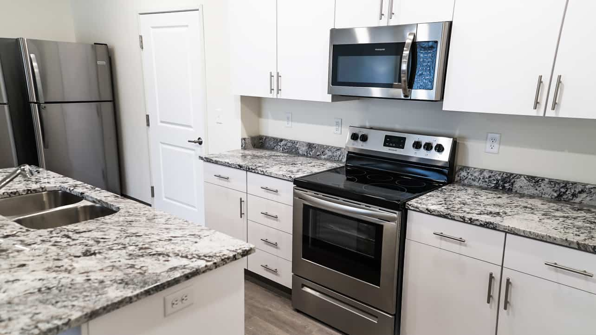

Job 1
Job 1 is responsible for cleaning the oven. This includes underneath the oven draw, the inside of the oven, and the drip pans.
Most people fail to clean under the drip pans. First, take out the drip pans and place them in the kitchen sink to soak. In the interior
of the oven is covered in burnt food, then use oven cleaner on the bottom, sides, and back of the oven. Be careful not to use
oven cleaner for anything other than to clean the oven. I have seen too many microwaves and counter tops liquified beacuse people used
oven cleaner on them.
The last step is to wipe everything out. If you don't the oven cleaner will leave a chalky residue on the sides. If this happens,
simply take a wet rag and remove the chalk.
